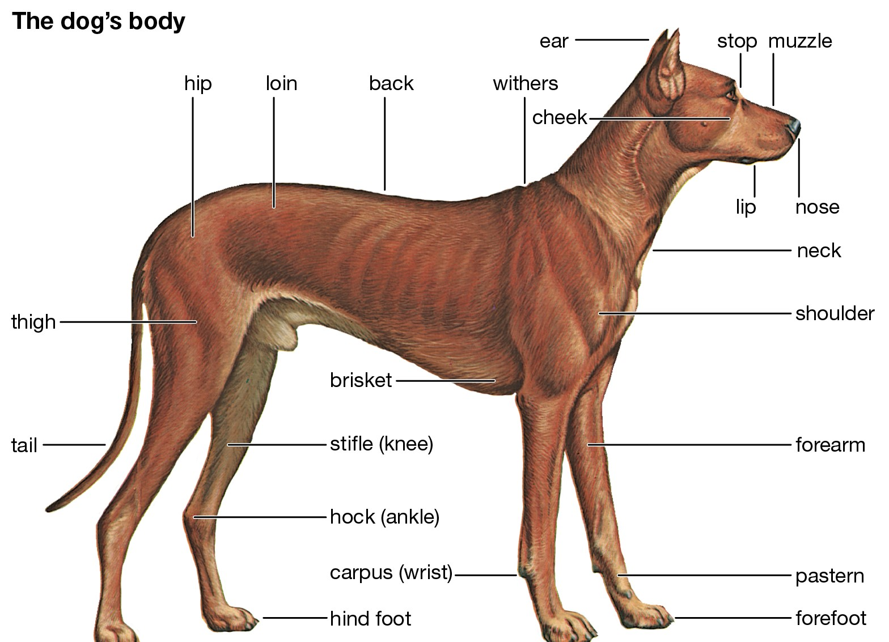
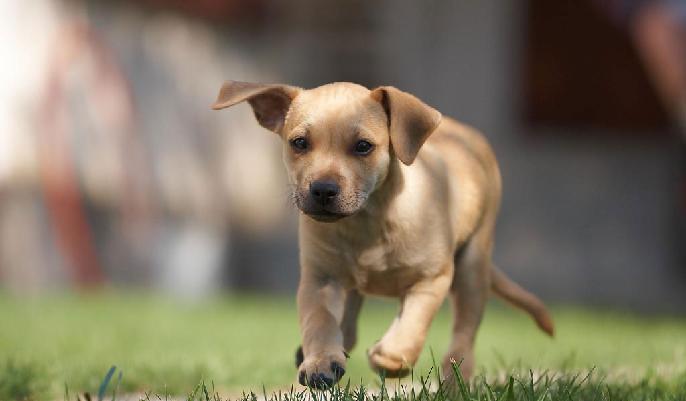

The dog is generally considered the 'first' domesticated animal. Dogs can differ in appearance, function, temperament and size.
Dogs can smell diseases such as diabetes and cancer, including prostate cancer, colorectal cancer and melanoma.
Dogs can smell about 10,000 times better than humans. Dogs' noses are wet to help them absorb scent chemicals.
Dogs have three eyelids.
This third eyelid clears visibility in the front of the eye, acting as a "windshield-washer" of sorts, clears mucus and debris from the cornea, produces antibodies to fight infection, and protects the cornea from injury.

To drink water, dogs plunge their tongue straight into the water, pull it to the rear and shovel the water into their throat
The smell in a dog’s urine lets other dogs know if the one who left the message is young or old, male or female, healthy or sick, and happy or angry.
Sweat ducts in dogs’ paws are activated when it is too hot but there's not enough of them to cool down. This is also why dogs pant.
Genetic evidence suggests that dogs descended directly from wolves (Canis) and that the now-extinct wolf lineages that produced dogs branched off from the line that produced modern living wolves sometime between 27,000 and 40,000 years ago.
The timing and location of dog domestication is a matter of debate. There is strong genetic evidence, however, that the first domestication events occurred somewhere in northern Eurasia between 14,000 and 29,000 years ago. In this region wolves likely facilitated their own domestication by trailing nomadic people in northern Eurasia and consuming the remains of game animals that hunters left behind.